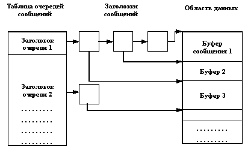
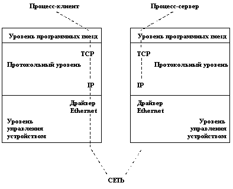

Каждый процесс в ОС UNIX выполняется в собственной виртуальной памяти, т.е. если не предпринимать дополнительных усилий, то даже процессы-близнецы, образованные в результате выполнения системного вызова fork(), на самом деле полностью изолированы один от другого (если не считать того, что процесс-потомок наследует от процесса-предка все открытые файлы). Тем самым, в ранних вариантах ОС UNIX поддерживались весьма слабые возможности взаимодействия процессов, даже входящих в общую иерархию порождения (т.е. имеющих общего предка).
Очень слабые средства поддерживались и для взаимной синхронизации процессов. Практически, все ограничивалось возможностью реакции на сигналы, и наиболее распространенным видом синхронизации являлась реакция процесса-предка на сигнал о завершении процесса-потомка.
По-видимому, применение такого подхода являлось реакцией на чрезмерно сложные механизмы взаимодействия и синхронизации параллельных процессов, существовавшие в исторически предшествующей UNIX ОС Multics. Напомним (см. раздел 1.1), что в ОС Multics поддерживалась сегментно-страничная организация виртуальной памяти, и в общей виртуальной памяти могло выполняться несколько параллельных процессов, которые, естественно, могли взаимодействовать через общую память. За счет возможности включения одного и того же сегмента в разную виртуальную память аналогичная возможность взаимодействий существовала и для процессов, выполняемых не в общей виртуальной памяти.
Для синхронизации таких взаимодействий процессов поддерживался общий механизм семафоров, позволяющий, в частности, организовывать взаимное исключение процессов в критических участках их выполнения (например, при взаимно-исключающем доступе к разделяемой памяти). Этот стиль параллельного программирования в принципе обеспечивает большую гибкость и эффективность, но является очень трудным для использования. Часто в программах появляются трудно обнаруживаемые и редко воспроизводимые синхронизационные ошибки; использование явной синхронизации, не связанной неразрывно с теми объектами, доступ к которым синхронизуется, делает логику программ трудно постижимой, а текст программ - трудно читаемым.
Понятно, что стиль ранних вариантов ОС UNIX стимулировал существенно более простое программирование. В наиболее простых случаях процесс-потомок образовывался только для того, чтобы асинхронно с основным процессом выполнить какое-либо простое действие (например, запись в файл). В более сложных случаях процессы, связанные иерархией родства, создавали обрабатывающие "конвейеры" с использованием техники программных каналов (pipes). Эта техника особенно часто применяется при программировании на командных языках (см. раздел 5.2).
Долгое время отцы-основатели ОС UNIX считали, что в той области, для которой предназначался UNIX (разработка программного обеспечения, подготовка и сопровождение технической документации и т.д.) этих возможностей вполне достаточно. Однако постепенное распространение системы в других областях и сравнительная простота наращивания ее возможностей привели к тому, что со временем в разных вариантах ОС UNIX в совокупности появился явно избыточный набор системных средств, предназначенных для обеспечения возможности взаимодействия и синхронизации процессов, которые не обязательно связаны отношением родства (в мире ОС UNIX эти средства обычно называют IPC от Inter-Process Communication Facilities). С появлением UNIX System V Release 4.0 (и более старшей версии 4.2) все эти средства были узаконены и вошли в фактический стандарт ОС UNIX современного образца.
Нельзя сказать, что средства IPC ОС UNIX идеальны хотя бы в каком-нибудь отношении. При разработке сложных асинхронных программных комплексов (например, систем реального времени) больше всего неудобств причиняет избыточность средств IPC. Всегда возможны несколько вариантов реализации, и очень часто невозможно найти критерии выбора. Дополнительную проблему создает тот факт, что в разных вариантах системы средства IPC реализуются по-разному, зачастую одни средства реализованы на основе использования других средств. Поэтому эффективность реализации различается, из-за чего усложняется разработка мобильных асинхронных программных комплексов.
Тем не менее, знать возможности IPC, безусловно, нужно, если относиться к ОС UNIX как к серьезной производственной операционной системе. В этом разделе мы рассмотрим основные стандартизованные возможности в основном на идейном уровне, не вдаваясь в технические детали.
Порядок рассмотрения не отражает какую-либо особую степень важности или предпочтительности конкретного средства. Мы начинаем с пакета средств IPC, которые появились в UNIX System V Release 3.0. Этот пакет включает:
- средства, обеспечивающие возможность наличия общей для процессов памяти (сегменты разделяемой памяти - shared memory segments);
- средства, обеспечивающие возможность синхронизации процессов при доступе к совместно используемым ресурсам, например, к разделяемой памяти (семафоры - semaphores);
- средства, обеспечивающие возможность посылки процессом сообщений другому произвольному процессу (очереди сообщений - message queues).
Эти механизмы объединяются в единый пакет, потому что соответствующие системные вызовы обладают близкими интерфейсами, а в их реализации используются многие общие подпрограммы. Вот основные общие свойства всех трех механизмов:
- Для каждого механизма поддерживается общесистемная таблица, элементы которой описывают всех существующих в данный момент представителей механизма (конкретные сегменты, семафоры или очереди сообщений).
- Элемент таблицы содержит некоторый числовой ключ, который является выбранным пользователем именем представителя соответствующего механизма. Другими словами, чтобы два или более процесса могли использовать некоторый механизм, они должны заранее договориться об именовании используемого представителя этого механизма и добиться того, чтобы тот же представитель не использовался другими процессами.
- Процесс, желающий начать пользоваться одним из механизмов, обращается к системе с системным вызовом из семейства "get", прямыми параметрами которого является ключ объекта и дополнительные флаги, а ответным параметром является числовой дескриптор, используемый в дальнейших системных вызовах подобно тому, как используется дескриптор файла при работе с файловой системой. Допускается использование специального значения ключа с символическим именем IPC_PRIVATE, обязывающего систему выделить новый элемент в таблице соответствующего механизма независимо от наличия или отсутствия в ней элемента, содержащего то же значение ключа. При указании других значений ключа задание флага IPC_CREAT приводит к образованию нового элемента таблицы, если в таблице отсутствует элемент с указанным значением ключа, или нахождению элемента с этим значением ключа. Комбинация флагов IPC_CREAT и IPC_EXCL приводит к выдаче диагностики об ошибочной ситуации, если в таблице уже содержится элемент с указанным значением ключа.
- Защита доступа к ранее созданным элементам таблицы каждого механизма основывается на тех же принципах, что и защита доступа к файлам.
Перейдем к более детальному изучению конкретных механизмов этого семейства.
Для работы с разделяемой памятью используются четыре системных вызова:
- shmget создает новый сегмент разделяемой памяти или находит существующий сегмент с тем же ключом;
- shmat подключает сегмент с указанным дескриптором к виртуальной памяти обращающегося процесса;
- shmdt отключает от виртуальной памяти ранее подключенный к ней сегмент с указанным виртуальным адресом начала;
- наконец, системный вызов shmctl служит для управления разнообразными параметрами, связанными с существующим сегментом.
После того, как сегмент разделяемой памяти подключен к виртуальной памяти процесса, этот процесс может обращаться к соответствующим элементам памяти с использованием обычных машинных команд чтения и записи, не прибегая к использованию дополнительных системных вызовов.
Синтаксис системного вызова shmget выглядит следующим образом:
shmid = shmget(key, size, flag);
Параметр size определяет желаемый размер сегмента в байтах. Далее работа происходит по общим правилам. Если в таблице разделяемой памяти находится элемент, содержащий заданный ключ, и права доступа не противоречат текущим характеристикам обращающегося процесса, то значением системного вызова является дескриптор существующего сегмента (и обратившийся процесс так и не узнает реального размера сегмента, хотя впоследствии его все-таки можно узнать с помощью системного вызова shmctl). В противном случае создается новый сегмент с размером не меньше установленного в системе минимального размера сегмента разделяемой памяти и не больше установленного максимального размера. Создание сегмента не означает немедленного выделения под него основной памяти. Это действие откладывается до выполнения первого системного вызова подключения сегмента к виртуальной памяти некоторого процесса. Аналогично, при выполнении последнего системного вызова отключения сегмента от виртуальной памяти соответствующая основная память освобождается.
Подключение сегмента к виртуальной памяти выполняется путем обращения к системному вызову shmat:
virtaddr = shmat(id, addr, flags);
Здесь id - это ранее полученный дескриптор сегмента, а addr - желаемый процессом виртуальный адрес, который должен соответствовать началу сегмента в виртуальной памяти. Значением системного вызова является реальный виртуальный адрес начала сегмента (его значение не обязательно совпадает со значением прямого параметра addr). Если значением addr является нуль, ядро выбирает наиболее удобный виртуальный адрес начала сегмента. Кроме того, ядро старается обеспечить (но не гарантирует) выбор такого стартового виртуального адреса сегмента, который обеспечивал бы отсутствие перекрывающихся виртуальных адресов данного разделяемого сегмента, сегмента данных и сегмента стека процесса (два последних сегмента могут расширяться).
Для отключения сегмента от виртуальной памяти используется системный вызов shmdt:
shmdt(addr);
где addr - это виртуальный адрес начала сегмента в виртуальной памяти, ранее полученный от системного вызова shmat. Естественно, система гарантирует (на основе использования таблицы сегментов процесса), что указанный виртуальный адрес действительно является адресом начала (разделяемого) сегмента в виртуальной памяти данного процесса.
Системный вызов shmctl:
shmctl(id, cmd, shsstatbuf);
содержит прямой параметр cmd, идентифицирующий требуемое конкретное действие, и предназначен для выполнения различных функций. Видимо, наиболее важной является функция уничтожения сегмента разделяемой памяти. Уничтожение сегмента производится следующим образом. Если к моменту выполнения системного вызова ни один процесс не подключил сегмент к своей виртуальной памяти, то основная память, занимаемая сегментом, освобождается, а соответствующий элемент таблицы разделяемых сегментов объявляется свободным. В противном случае в элементе таблицы сегментов выставляется флаг, запрещающий выполнение системного вызова shmget по отношению к этому сегменту, но процессам, успевшим получить дескриптор сегмента, по-прежнему разрешается подключать сегмент к своей виртуальной памяти. При выполнении последнего системного вызова отключения сегмента от виртуальной памяти операция уничтожения сегмента завершается.
Механизм семафоров, реализованный в ОС UNIX, является обобщением классического механизма семафоров общего вида, предложенного более 25 лет тому назад известным голландским специалистом профессором Дейкстрой. Заметим, что целесообразность введения такого обобщения достаточно сомнительна. Обычно наоборот использовался облегченный вариант семафоров Дейкстры - так называемые двоичные семафоры. Мы не будем здесь углубляться в общую теорию синхронизации на основе семафоров, но заметим, что достаточность в общем случае двоичных семафоров доказана (известен алгоритм реализации семафоров общего вида на основе двоичных). Конечно, аналогичные рассуждения можно было бы применить и к варианту семафоров, примененному в ОС UNIX.
Семафор в ОС UNIX состоит из следующих элементов:
- значение семафора;
- идентификатор процесса, который хронологически последним работал с семафором;
- число процессов, ожидающих увеличения значения семафора;
- число процессов, ожидающих нулевого значения семафора.
Для работы с семафорами поддерживаются три системных вызова:
- semget для создания и получения доступа к набору семафоров;
- semop для манипулирования значениями семафоров (это именно тот системный вызов, который позволяет процессам синхронизоваться на основе использования семафоров);
- semctl для выполнения разнообразных управляющих операций над набором семафоров.
Системный вызов semget имеет следующий синтаксис:
id = semget(key, count, flag);
где прямые параметры key и flag и возвращаемое значение системного вызова имеют тот же смысл, что для других системных вызовов семейства "get", а параметр count задает число семафоров в наборе семафоров, обладающих одним и тем же ключом. После этого индивидуальный семафор идентифицируется дескриптором набора семафоров и номером семафора в этом наборе. Если к моменту выполнения системного вызова semget набор семафоров с указанным ключом уже существует, то обращающийся процесс получит соответствующий дескриптор, но так и не узнает о реальном числе семафоров в группе (хотя позже это все-таки можно узнать с помощью системного вызова semctl).
Основным системным вызовом для манипулирования семафором является semop:
oldval = semop(id, oplist, count);
где id - это ранее полученный дескриптор группы семафоров, oplist - массив описателей операций над семафорами группы, а count - размер этого массива. Значение, возвращаемое системным вызовом, является значением последнего обработанного семафора. Каждый элемент массива oplist имеет следующую структуру:
- номер семафора в указанном наборе семафоров;
- операция;
- флаги.
Если проверка прав доступа проходит нормально, и указанные в массиве oplist номера семафоров не выходят за пределы общего размера набора семафоров, то системный вызов выполняется следующим образом. Для каждого элемента массива oplist значение соответствующего семафора изменяется в соответствии со значением поля "операция".
- Если значение поля операции положительно, то значение семафора увеличивается на единицу, а все процессы, ожидающие увеличения значения семафора, активизируются (пробуждаются в терминологии UNIX).
- Если значение поля операции равно нулю, то если значение семафора также равно нулю, выбирается следующий элемент массива oplist. Если же значение семафора отлично от нуля, то ядро увеличивает на единицу число процессов, ожидающих нулевого значения семафора, а обратившийся процесс переводится в состояние ожидания (усыпляется в терминологии UNIX).
- Наконец, если значение поля операции отрицательно, и его абсолютное значение меньше или равно значению семафора, то ядро прибавляет это отрицательное значение к значению семафора. Если в результате значение семафора стало нулевым, то ядро активизирует (пробуждает) все процессы, ожидающие нулевого значения этого семафора. Если же значение семафора меньше абсолютной величины поля операции, то ядро увеличивает на единицу число процессов, ожидающих увеличения значения семафора и откладывает (усыпляет) текущий процесс до наступления этого события.
Основным поводом для введения массовых операций над семафорами было стремление дать программистам возможность избегать тупиковых ситуаций в связи с семафорной синхронизацией. Это обеспечивается тем, что системный вызов semop, каким бы длинным он не был (по причине потенциально неограниченной длины массива oplist) выполняется как атомарная операция, т.е. во время выполнения semop ни один другой процесс не может изменить значение какого-либо семафора.
Наконец, среди флагов-параметров системного вызова semop может содержаться флаг с символическим именем IPC_NOWAIT, наличие которого заставляет ядро ОС UNIX не блокировать текущий процесс, а лишь сообщать в ответных параметрах о возникновении ситуации, приведшей бы к блокированию процесса при отсутствии флага IPC_NOWAIT. Мы не будем обсуждать здесь возможности корректного завершения работы с семафорами при незапланированном завершении процесса; заметим только, что такие возможности обеспечиваются.
Системный вызов semctl имеет формат
semctl(id, number, cmd, arg);
где id - это дескриптор группы семафоров, number - номер семафора в группе, cmd - код операции, а arg - указатель на структуру, содержимое которой интерпретируется по-разному, в зависимости от операции. В частности, с помощью semctl можно уничтожить индивидуальный семафор в указанной группе. Однако детали этого системного вызова настолько громоздки, что мы рекомендуем в случае необходимости обращаться к технической документации используемого варианта операционной системы.
Для обеспечения возможности обмена сообщениями между процессами этот механизм поддерживается следующими системными вызовами:
- msgget для образования новой очереди сообщений или получения дескриптора существующей очереди;
- msgsnd для посылки сообщения (вернее, для его постановки в указанную очередь сообщений);
- msgrcv для приема сообщения (вернее, для выборки сообщения из очереди сообщений);
- msgctl для выполнения ряда управляющих действий.
Системный вызов msgget обладает стандартным для семейства "get" системных вызовов синтаксисом:
msgqid = msgget(key, flag);
Ядро хранит сообщения в виде связного списка (очереди), а дескриптор очереди сообщений является индексом в массиве заголовков очередей сообщений. В дополнение к информации, общей для всех механизмов IPC в UNIX System V, в заголовке очереди хранятся также:
- указатели на первое и последнее сообщение в данной очереди;
- число сообщений и общее количество байтов данных во всех них вместе взятых;
- идентификаторы процессов, которые последними послали или приняли сообщение через данную очередь;
- временные метки последних выполненных операций msgsnd, msgrsv и msgctl.
Как обычно, при выполнении системного вызова msgget ядро ОС UNIX либо создает новую очередь сообщений, помещая ее заголовок в таблицу очередей сообщений и возвращая пользователю дескриптор вновь созданной очереди, либо находит элемент таблицы очередей сообщений, содержащий указанный ключ, и возвращает соответствующий дескриптор очереди. На рисунке 3.6 показаны структуры данных, используемые для организации очередей сообщений.

Рис. 3.6. Структуры данных, используемые для организации очередей сообщений
Для посылки сообщения используется системный вызов msgsnd:
msgsnd(msgqid, msg, count, flag);
где msg - это указатель на структуру, содержащую определяемый пользователем целочисленный тип сообщения и символьный массив - собственно сообщение; count задает размер сообщения в байтах, а flag определяет действия ядра при выходе за пределы допустимых размеров внутренней буферной памяти.
Для того, чтобы ядро успешно поставило указанное сообщение в указанную очередь сообщений, должны быть выполнены следующие условия: обращающийся процесс должен иметь соответствующие права по записи в данную очередь сообщений; длина сообщения не должна превосходить установленный в системе верхний предел; общая длина сообщений (включая вновь посылаемое) не должна превосходить установленный предел; указанный в сообщении тип сообщения должен быть положительным целым числом. В этом случае обратившийся процесс успешно продолжает свое выполнение, оставив отправленное сообщение в буфере очереди сообщений. Тогда ядро активизирует (пробуждает) все процессы, ожидающие поступления сообщений из данной очереди.
Если же оказывается, что новое сообщение невозможно буферизовать в ядре по причине превышения верхнего предела суммарной длины сообщений, находящихся в одной очереди сообщений, то обратившийся процесс откладывается (усыпляется) до тех пор, пока очередь сообщений не разгрузится процессами, ожидающими получения сообщений. Чтобы избежать такого откладывания, обращающийся процесс должен указать в числе параметров системного вызова msgsnd значение флага с символическим именем IPC_NOWAIT (как в случае использования семафоров), чтобы ядро выдало свидетельствующий об ошибке код возврата системного вызова mgdsng в случае невозможности включить сообщение в указанную очередь.
Для приема сообщения используется системный вызов msgrcv:
count = msgrcv(id, msg, maxcount, type, flag);
Здесь msg - это указатель на структуру данных в адресном пространстве пользователя, предназначенную для размещения принятого сообщения; maxcount задает размер области данных (массива байтов) в структуре msg; значение type специфицирует тип сообщения, которое желательно принять; значение параметра flag указывает ядру, что следует предпринять, если в указанной очереди сообщений отсутствует сообщение с указанным типом. Возвращаемое значение системного вызова задает реальное число байтов, переданных пользователю.
Выполнение системного вызова, как обычно, начинается с проверки правомочности доступа обращающегося процесса к указанной очереди. Далее, если значением параметра type является нуль, ядро выбирает первое сообщение из указанной очереди сообщений и копирует его в заданную пользовательскую структуру данных. После этого корректируется информация, содержащаяся в заголовке очереди (число сообщений, суммарный размер и т.д.). Если какие-либо процессы были отложены по причине переполнения очереди сообщений, то все они активизируются. В случае, если значение параметра maxcount оказывается меньше реального размера сообщения, ядро не удаляет сообщение из очереди и возвращает код ошибки. Однако, если задан флаг MSG_NOERROR, то выборка сообщения производится, и в буфер пользователя переписываются первые maxcount байтов сообщения.
Путем задания соответствующего значения параметра type пользовательский процесс может потребовать выборки сообщения некоторого конкретного типа. Если это значение является положительным целым числом, ядро выбирает из очереди сообщений первое сообщение с таким же типом. Если же значение параметра type есть отрицательное целое число, то ядро выбирает из очереди первое сообщение, значение типа которого меньше или равно абсолютному значению параметра type.
Во всех случаях, если в указанной очереди отсутствуют сообщения, соответствующие спецификации параметра type, ядро откладывает (усыпляет) обратившийся процесс до появления в очереди требуемого сообщения. Однако, если в параметре flag задано значение флага IPC_NOWAIT, то процесс немедленно оповещается об отсутствии сообщения в очереди путем возврата кода ошибки.
Системный вызов
msgctl(id, cmd, mstatbuf);
служит для опроса состояния описателя очереди сообщений, изменения его состояния (например, изменения прав доступа к очереди) и для уничтожения указанной очереди сообщений (детали мы опускаем).
Как мы уже неоднократно отмечали, традиционным средством взаимодействия и синхронизации процессов в ОС UNIX являются программные каналы (pipes). Теоретически программный канал позволяет взаимодействовать любому числу процессов, обеспечивая дисциплину FIFO (first-in-first-out). Другими словами, процесс, читающий из программного канала, прочитает те данные, которые были записаны в программный канал наиболее давно. В традиционной реализации программных каналов для хранения данных использовались файлы. В современных версиях ОС UNIX для реализации программных каналов применяются другие средства IPC (в частности, очереди сообщений).
Различаются два вида программных каналов - именованные и неименованные. Именованный программный канал может служить для общения и синхронизации произвольных процессов, знающих имя данного программного канала и имеющих соответствующие права доступа. Неименованным программным каналом могут пользоваться только создавший его процесс и его потомки (необязательно прямые).
Для создания именованного программного канала (или получения к нему доступа) используется обычный файловый системный вызов open. Для создания же неименованного программного канала существует специальный системный вызов pipe (исторически более ранний). Однако после получения соответствующих дескрипторов оба вида программных каналов используются единообразно с помощью стандартных файловых системных вызовов read, write и close.
Системный вызов pipe имеет следующий синтаксис:
pipe(fdptr);
где fdptr - это указатель на массив из двух целых чисел, в который после создания неименованного программного канала будут помещены дескрипторы, предназначенные для чтения из программного канала (с помощью системного вызова read) и записи в программный канал (с помощью системного вызова write). Дескрипторы неименованного программного канала - это обычные дескрипторы файлов, т.е. такому программному каналу соответствуют два элемента таблицы открытых файлов процесса. Поэтому при последующем использовании системных вызовов read и write процесс совершенно не обязан отличать случай использования программных каналов от случая использования обычных файлов (собственно, на этом и основана идея перенаправления ввода/вывода и организации конвейеров).
Для создания именованных программных каналов (или получения доступа к уже существующим каналам) используется обычный системный вызов open. Основным отличием от случая открытия обычного файла является то, что если именованный программный канал открывается на запись, и ни один процесс не открыл тот же программный канал для чтения, то обращающийся процесс блокируется (усыпляется) до тех пор, пока некоторый процесс не откроет данный программный канал для чтения (аналогично обрабатывается открытие для чтения). Повод для использования такого режима работы состоит в том, что, вообще говоря, бессмысленно давать доступ к программному каналу на чтение (запись) до тех пор, пока некоторый другой процесс не обнаружит готовности писать в данный программный канал (соответственно читать из него). Понятно, что если бы эта схема была абсолютной, то ни один процесс не смог бы начать работать с заданным именованным программным каналом (кто-то должен быть первым). Поэтому в числе флагов системного вызова open имеется флаг NO_DELAY, задание которого приводит к тому, что именованный программный канал открывается независимо от наличия соответствующего партнера.
Запись данных в программный канал и чтение данных из программного канала (независимо от того, именованный он или неименованный) выполняются с помощью системных вызовов read и write. Отличие от случая использования обычных файлов состоит лишь в том, что при записи данные помещаются в начало канала, а при чтении выбираются (освобождая соответствующую область памяти) из конца канала. Как всегда, возможны ситуации, когда при попытке записи в программный канал оказывается, что канал переполнен, и тогда обращающийся процесс блокируется, пока канал не разгрузится (если только не указан флаг нежелательности блокировки в числе параметров системного вызова write), или когда при попытке чтения из программного канала оказывается, что канал пуст (или в нем отсутствует требуемое количество байтов информации), и тогда обращающийся процесс блокируется, пока канал не загрузится соответствующим образом (если только не указан флаг нежелательности блокировки в числе параметров системного вызова read).
Окончание работы процесса с программным каналом (независимо от того, именованный он или неименованный) производится с помощью системного вызова close. В основном, действия ядра при закрытии программного канала аналогичны действиям при закрытии обычного файла. Однако имеется отличие в том, что при выполнении последнего закрытия канала по записи все процессы, ожидающие чтения из программного канала (т.е. процессы, обратившиеся к ядру с системным вызовом read и отложенные по причине недостатка данных в канале), активизируются с возвратом кода ошибки из системного вызова. (Это совершенно оправданно в случае неименованных программных каналов: если достоверно известно, что больше нечего читать, то зачем заставлять далее ждать чтения. Для именованных программных каналов это решение не является очевидным, но соответствует общей политике ОС UNIX о раннем предупреждении процессов.)
Операционная система UNIX с самого начала проектировалась как сетевая ОС в том смысле, что должна была обеспечивать явную возможность взаимодействия процессов, выполняющихся на разных компьютерах, соединенных сетью передачи данных. Главным образом, эта возможность базировалась на обеспечении файлового интерфейса для устройств (включая сетевые адаптеры) на основе понятия специального файла. Другими словами, два или более процессов, располагающихся на разных компьютерах, могли договориться о способе взаимодействия на основе использования возможностей соответствующих сетевых драйверов.
Эти базовые возможности были в принципе достаточными для создания сетевых утилит; в частности, на их основе был создан исходный в ОС UNIX механизм сетевых взаимодействий uucp. Однако организация сетевых взаимодействий пользовательских процессов была затруднительна главным образом потому, что при использовании конкретной сетевой аппаратуры и конкретного сетевого протокола требовалось выполнять множество системных вызовов ioctl, что делало программы зависимыми от специфической сетевой среды. Требовался поддерживаемый ядром механизм, позволяющий скрыть особенности этой среды и позволить единообразно взаимодействовать процессам, выполняющимся на одном компьютере, в пределах одной локальной сети или разнесенным на разные компьютеры территориально распределенной сети. Первое решение этой проблемы было предложено и реализовано в UNIX BSD 4.1 в 1982 г. (вводную информацию см. в п. 2.7.3).
На уровне ядра механизм программных гнезд поддерживается тремя составляющими: компонентом уровня программных гнезд (независящим от сетевого протокола и среды передачи данных), компонентом протокольного уровня (независящим от среды передачи данных) и компонентом уровня управления сетевым устройством (см. рисунок 3.7).

Рис. 3.7. Одна из возможных конфигураций программных гнезд
Допустимые комбинации протоколов и драйверов задаются при конфигурации системы, и во время работы системы их менять нельзя. Легко видеть, что по своему духу организация программных гнезд близка к идее потоков (см. пп. 2.7.1 и 3.4.6), поскольку основана на разделении функций физического управления устройством, протокольных функций и функций интерфейса с пользователями. Однако это менее гибкая схема, поскольку не допускает изменения конфигурации "на ходу".
Взаимодействие процессов на основе программных гнезд основано на модели "клиент-сервер". Процесс-сервер "слушает (listens)" свое программное гнездо, одну из конечных точек двунаправленного пути коммуникаций, а процесс-клиент пытается общаться с процессом-сервером через другое программное гнездо, являющееся второй конечной точкой коммуникационного пути и, возможно, располагающееся на другом компьютере. Ядро поддерживает внутренние соединения и маршрутизацию данных от клиента к серверу.
Программные гнезда с общими коммуникационными свойствами, такими как способ именования и протокольный формат адреса, группируются в домены. Наиболее часто используемыми являются "домен системы UNIX" для процессов, которые взаимодействуют через программные гнезда в пределах одного компьютера, и "домен Internet" для процессов, которые взаимодействуют в сети в соответствии с семейством протоколов TCP/IP (см. п. 2.7.2).
Выделяются два типа программных гнезд - гнезда с виртуальным соединением (в начальной терминологии stream sockets) и датаграммные гнезда (datagram sockets). При использовании программных гнезд с виртуальным соединением обеспечивается передача данных от клиента к серверу в виде непрерывного потока байтов с гарантией доставки. При этом до начала передачи данных должно быть установлено соединение, которое поддерживается до конца коммуникационной сессии. Датаграммные программные гнезда не гарантируют абсолютной надежной, последовательной доставки сообщений и отсутствия дубликатов пакетов данных - датаграмм. Но для использования датаграммного режима не требуется предварительное дорогостоящее установление соединений, и поэтому этот режим во многих случаях является предпочтительным. Система по умолчанию сама обеспечивает подходящий протокол для каждой допустимой комбинации "домен-гнездо". Например, протокол TCP используется по умолчанию для виртуальных соединений, а протокол UDP - для датаграммного способа коммуникаций (информация об этих протоколах представлена в п. 2.7.2).
Для работы с программными гнездами поддерживается набор специальных библиотечных функций (в UNIX BSD это системные вызовы, однако, как мы отмечали в п. 2.7.3, в UNIX System V они реализованы на основе потокового интерфейса TLI). Рассмотрим кратко интерфейсы и семантику этих функций.
Для создания нового программного гнезда используется функция socket:
sd = socket(domain, type, protocol);
где значение параметра domain определяет домен данного гнезда, параметр type указывает тип создаваемого программного гнезда (с виртуальным соединением или датаграммное), а значение параметра protocol определяет желаемый сетевой протокол. Заметим, что если значением параметра protocol является нуль, то система сама выбирает подходящий протокол для комбинации значений параметров domain и type, это наиболее распространенный способ использования функции socket. Возвращаемое функцией значение является дескриптором программного гнезда и используется во всех последующих функциях. Вызов функции close(sd) приводит к закрытию (уничтожению) указанного программного гнезда.
Для связывания ранее созданного программного гнезда с именем используется функция bind:
bind(sd, socknm, socknlen);
Здесь sd - дескриптор ранее созданного программного гнезда, socknm - адрес структуры, которая содержит имя (идентификатор) гнезда, соответствующее требованиям домена данного гнезда и используемого протокола (в частности, для домена системы UNIX имя является именем объекта в файловой системе, и при создании программного гнезда действительно создается файл), параметр socknlen содержит длину в байтах структуры socknm (этот параметр необходим, поскольку длина имени может весьма различаться для разных комбинаций "домен-протокол").
С помощью функции connect процесс-клиент запрашивает систему связаться с существующим программным гнездом (у процесса-сервера):
connect(sd, socknm, socknlen);
Смысл параметров такой же, как у функции bind, однако в качестве имени указывается имя программного гнезда, которое должно находиться на другой стороне коммуникационного канала. Для нормального выполнения функции необходимо, чтобы у гнезда с дескриптором sd и у гнезда с именем socknm были одинаковые домен и протокол. Если тип гнезда с дескриптором sd является датаграммным, то функция connect служит только для информирования системы об адресе назначения пакетов, которые в дальнейшем будут посылаться с помощью функции send; никакие действия по установлению соединения в этом случае не производятся.
Функция listen предназначена для информирования системы о том, что процесс-сервер планирует установление виртуальных соединений через указанное гнездо:
listen(sd, qlength);
Здесь sd - это дескриптор существующего программного гнезда, а значением параметра qlength является максимальная длина очереди запросов на установление соединения, которые должны буферизоваться системой, пока их не выберет процесс-сервер.
Для выборки процессом-сервером очередного запроса на установление соединения с указанным программным гнездом служит функция accept:
nsd = accept(sd, address, addrlen);
Параметр sd задает дескриптор существующего программного гнезда, для которого ранее была выполнена функция listen; address указывает на массив данных, в который должна быть помещена информация, характеризующая имя программного гнезда клиента, со стороны которого поступает запрос на установление соединения; addrlen - адрес, по которому находится длина массива address. Если к моменту выполнения функции accept очередь запросов на установление соединений пуста, то процесс-сервер откладывается до поступления запроса. Выполнение функции приводит к установлению виртуального соединения, а ее значением является новый дескриптор программного гнезда, который должен использоваться при работе через данное соединение. По адресу addrlen помещается реальный размер массива данных, которые записаны по адресу address. Процесс-сервер может продолжать "слушать" следующие запросы на установление соединения, пользуясь установленным соединением.
Для передачи и приема данных через программные гнезда с установленным виртуальным соединением используются функции send и recv:
count = send(sd, msg, length, flags);
count = recv(sd, buf, length, flags);
В функции send параметр sd задает дескриптор существующего программного гнезда с установленным соединением; msg указывает на буфер с данными, которые требуется послать; length задает длину этого буфера. Наиболее полезным допустимым значением параметра flags является значение с символическим именем MSG_OOB, задание которого означает потребность во внеочередной посылке данных. "Внеочередные" сообщения посылаются помимо нормального для данного соединения потока данных, обгоняя все непрочитанные сообщения. Потенциальный получатель данных может получить специальный сигнал и в ходе его обработки немедленно прочитать внеочередные данные. Возвращаемое значение функции равняется числу реально посланных байтов и в нормальных ситуациях совпадает со значением параметра length.
В функции recv параметр sd задает дескриптор существующего программного гнезда с установленным соединением; buf указывает на буфер, в который следует поместить принимаемые данные; length задает максимальную длину этого буфера. Наиболее полезным допустимым значением параметра flags является значение с символическим именем MSG_PEEK, задание которого приводит к переписи сообщения в пользовательский буфер без его удаления из системных буферов. Возвращаемое значение функции является числом байтов, реально помещенных в buf.
Заметим, что в случае использования программных гнезд с виртуальным соединением вместо функций send и recv можно использовать обычные файловые системные вызовы read и write. Для программных гнезд они выполняются абсолютно аналогично функциям send и recv. Это позволяет создавать программы, не зависящие от того, работают ли они с обычными файлами, программными каналами или программными гнездами.
Для посылки и приема сообщений в датаграммном режиме используются функции sendto и recvfrom:
count = sendto(sd, msg, length, flags, socknm, socknlen);
count = recvfrom(sd, buf, length, flags, socknm, socknlen);
Смысл параметров sd, msg, buf и lenght аналогичен смыслу одноименных параметров функций send и recv. Параметры socknm и socknlen функции sendto задают имя программного гнезда, в которое посылается сообщение, и могут быть опущены, если до этого вызывалась функция connect. Параметры socknm и socknlen функции recvfrom позволяют серверу получить имя пославшего сообщение процесса-клиента.
Наконец, для немедленной ликвидации установленного соединения используется системный вызов shutdown:
shutdown(sd, mode);
Вызов этой функции означает, что нужно немедленно остановить коммуникации либо со стороны посылающего процесса, либо со стороны принимающего процесса, либо с обеих сторон (в зависимости от значения параметра mode). Действия функции shutdown отличаются от действий функции close тем, что, во-первых, выполнение последней "притормаживается" до окончания попыток системы доставить уже отправленные сообщения. Во-вторых, функция shutdown разрывает соединение, но не ликвидирует дескрипторы ранее соединенных гнезд. Для окончательной их ликвидации все равно требуется вызов функции close.
Замечание: приведенная в этом пункте информация может несколько отличаться от требований реально используемой вами системы. В основном это относится к символическим именам констант. Постоянная беда пользователей ОС UNIX состоит в том, что от версии к версии меняются символические имена и имена системных структурных типов.
Здесь нам почти нечего добавить к материалу, приведенному в п. 2.7.1. На основе использования механизма потоковых сетевых драйверов в UNIX System V создана библиотека TLI (Transport Layer Interface), обеспечивающая транспортный сервис на основе стека протоколов TCP/IP. Возможности этого пакета превышают описанные выше возможности программных гнезд и, конечно, позволяют организовывать разнообразные виды коммуникации процессов. Однако многообразие и сложность набора функций библиотеки TLI не позволяют нам в подробностях описать их в рамках этого курса. Кроме того, TLI относится, скорее, не к теме ОС UNIX, а к теме реализаций семиуровневой модели ISO/OSI. Поэтому в случае необходимости мы рекомендуем пользоваться технической документацией по используемому варианту ОС UNIX или читать специальную литературу, посвященную сетевым возможностям современных версий UNIX.
Предыдущая глава | Оглавление | Следующая глава
Comments: [email protected]
Copyright © CIT